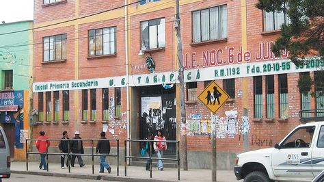

La siguiente biografia es mia, naci 7 de mayo de 2000, en un hospital "EL CARMEN", a horas 2:00 am, en la ciudad del Alto, los primeros años de mi vida la pase en mi casa al cuidado de mi madre, fui el primer hijo de mi familia, asi que no tuve hermanos una temporada, en cuestion de mis estudios, curse mis primeros cursos en el colegio "6 DE JUNIO" estuve en ese colegio hasta primero de secundaria, luego me cambie de colegio por cambio de domicilio me cambie al colegio "SANTISIMA TRINIDAD FE Y ALEGRIA" y culmine mis estudios en dicho colegio.
Terminando mis estudios, me decidi a estudiar informatica por que siempre me gusto todo lo que tenga que ver informatica postule a la carrera de "INFORMATICA" en la Universidad Mayor De Sandres por los cursos prefacultativos a la cual aprobe y actualmente estoy cursando mi primer semestre
En cuestion de mi familia, tengo 3 hermanos mas exactamente 2 hermanas y un hermano, yo soy el mayor de los hermanos